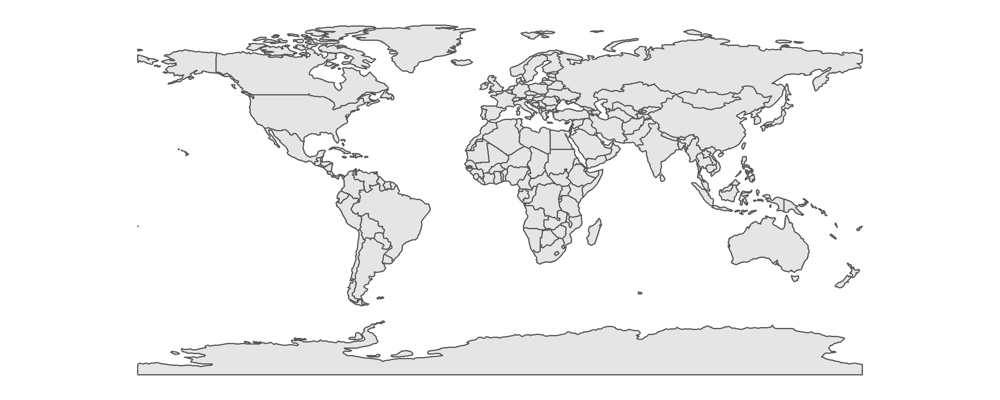
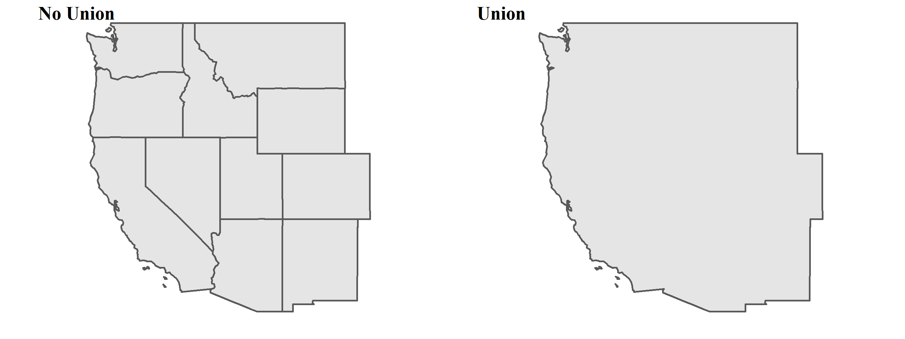
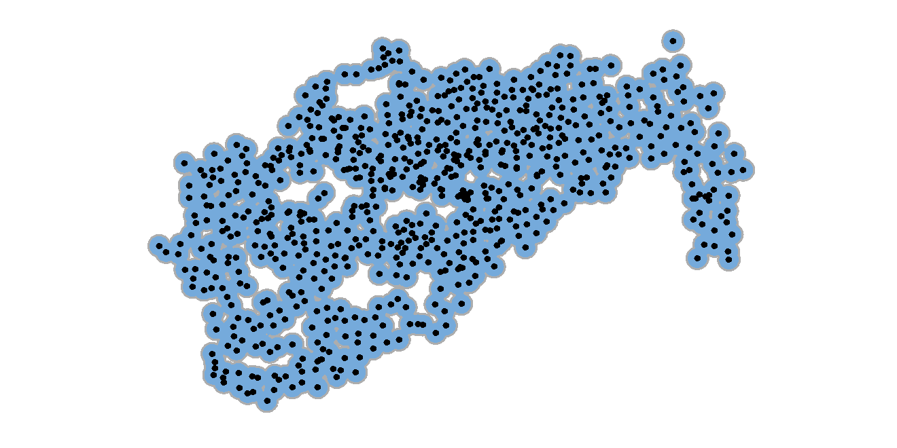
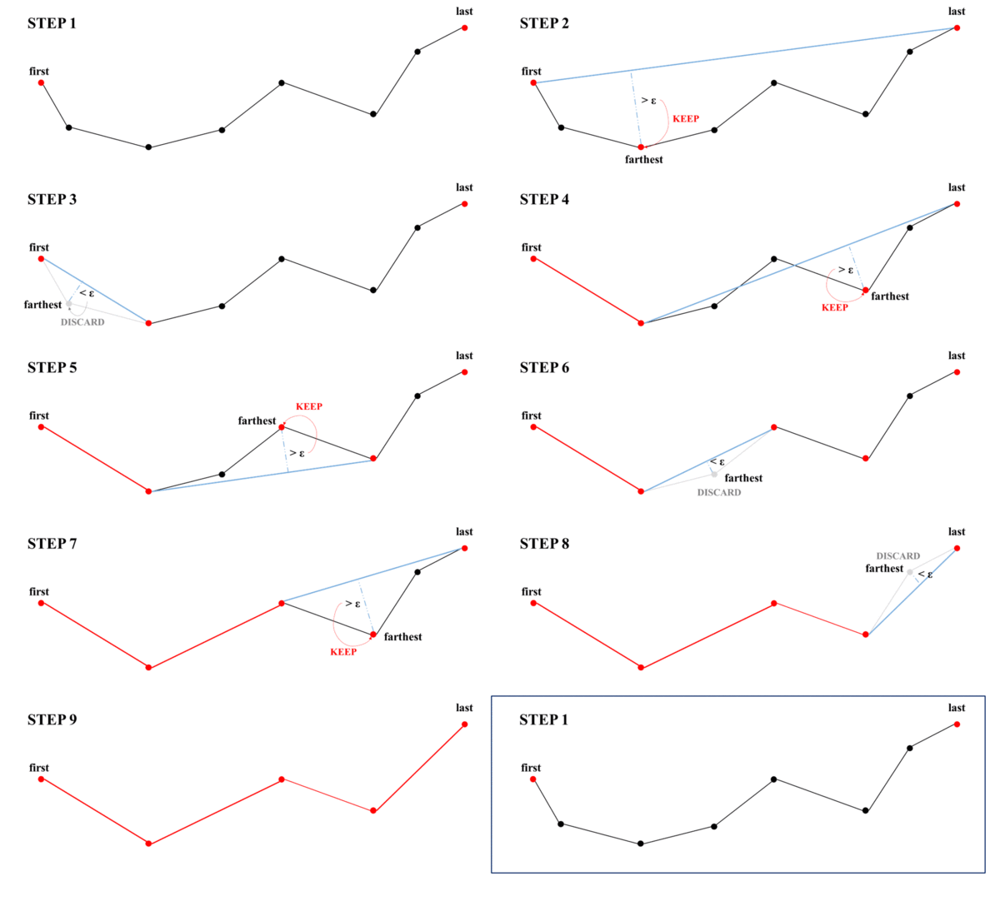
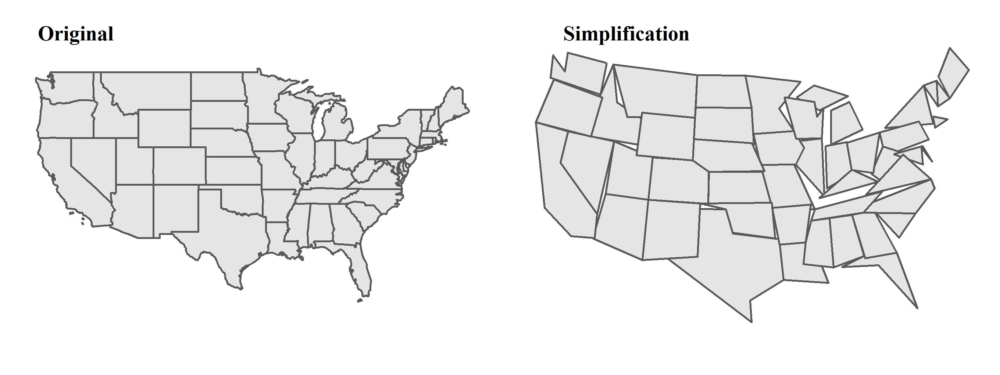
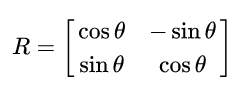
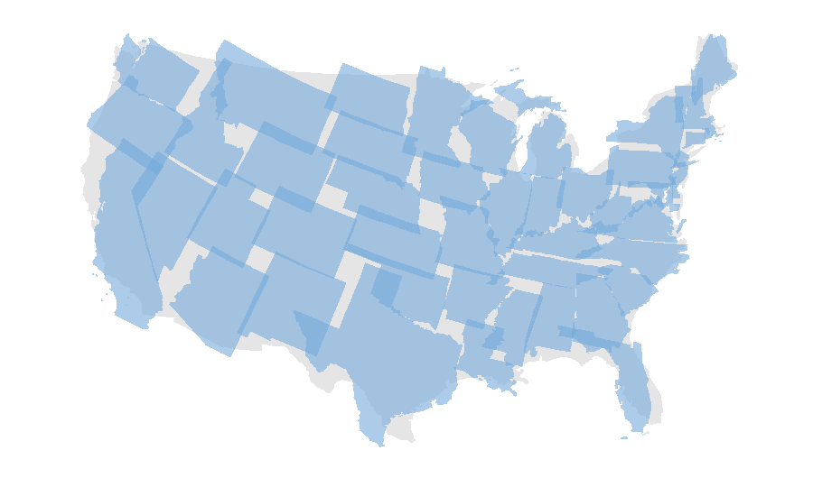

Chapter 5 Spatial Operations
We have learned how geographic datasets are structured in R, and how to join the spatial and attribute features. In this chapter, we would further discuss about the skills of spatial operations. Imagine that we want to know the number of schools in each villages, we should intersect the school point layer and village polygon layer, to identify the polygon for each point located on. “Intersection” is a type of spatial operations. Or imagine we want to know whether there are schools within 500 meters of MRT stations. We need to draw buffer of the stations in advance. “Buffer” is also a type of spatial operations. From the examples above, we find that spatial operations are vital in the spatial analysis.
We would introduce some common spatial operation functions in package sf. But please note that we would also use some functions in package dplyr. If you are not acquainted with the package, please read the notebook attached here, which provides you with a quick learn on the major function in dplyr. More detailed information of dplyr is supplied in Chapter 5 of R for Data Science.
5.1 Spatial Join
As we have learned in the previous chapter, joining spatial and attribute data requires a primary key, namely a common column variable. But what if we want to join two spatial data? It applies the similar concept, but relies on the shared areas of geographic space (spatial overlay). We can apply function st_join(x, y, left). The target object which would be in the left part of the new data frame is placed in the first parameter (x), while the joined object is placed in the second parameter (y). Parameter left= represents whether do the left join or not, which is left=T by default, and return all records of the x object with y fields. If left=F, then do the inner join instead.
Take nz and nz_height in spData for instance. The former data is the map of New Zealand, while the latter is the top 101 highest points in the country. In the example below, we want to know which provinces those points are located in.
st_join(nz_height, nz["Name"])## Simple feature collection with 101 features and 3 fields
## Geometry type: POINT
## Dimension: XY
## Bounding box: xmin: 1204143 ymin: 5048309 xmax: 1822492 ymax: 5650492
## Projected CRS: NZGD2000 / New Zealand Transverse Mercator 2000
## First 10 features:
## t50_fid elevation Name geometry
## 1 2353944 2723 Southland POINT (1204143 5049971)
## 2 2354404 2820 Otago POINT (1234725 5048309)
## 3 2354405 2830 Otago POINT (1235915 5048745)
## 4 2369113 3033 West Coast POINT (1259702 5076570)
## 5 2362630 2749 Canterbury POINT (1378170 5158491)
## 6 2362814 2822 Canterbury POINT (1389460 5168749)
## 7 2362817 2778 Canterbury POINT (1390166 5169466)
## 8 2363991 3004 Canterbury POINT (1372357 5172729)
## 9 2363993 3114 Canterbury POINT (1372062 5173236)
## 10 2363994 2882 Canterbury POINT (1372810 5173419)Please note that we should remain the class sf in two parameters. Thus, second parameter in function st_join() should not be nz$name, which is a numeric type. Use nz["Name"] instead, to remain the spatial data.
You may be confused about the sequence of data placed in function st_join(). Let’s do a simple comparison. In st_join(nz_height, nz), nz_height is target data, and hence the new data frame is based on all the highest points, and the geometry remains the form of nz_height (point). In st_join(nz, nz_height), nz is the target data, and hence the new data frame is based on the province, and the geometry remains the form of nz (polygon). Try the code yourself might get a better knowing.
Note that st_join(..., join=st_intersects) does the intersection operation by default. If we want to do other operations, we need to revise the parameter join= in st_join(..., join=). Function used in join= is listed in documentation of geos_binary_pred. The features are simply introduced in the table below (not all the functions are appropriate to be applied in st_join).
| Function | Features |
|---|---|
st_intersects(x,y)
|
identifies if x and y geometry share any space |
st_contains(x,y)
|
identifies if x is within y (i.e. point within polygon) |
st_disjoint(x,y)
|
identifies when geometries from x do not share space with y |
st_crosses(x,y)
|
identifies if any geometry of x have commonalities with y |
st_covers(x,y)
|
identifies if any point from x is outside of y (i.e. polygon outside polygon) |
st_covered_by(x,y)
|
identifies if x is completely within y (i.e. polygon completely within polygon) |
st_within(x,y)
|
identifies if x is in a specified distance to y |
st_touches(x,y)
|
identifies if geometries of x and y share a common point but their interiors do not intersect |
5.2 Attribute Aggregation
Aggregation operations summarize datasets (including attributes and spatial features) by a “grouping variable.” We can use function group_by() %>% summarise() in dplyr to conduct aggregation. Let’s take data “world” for example. We want to group by the data by continent, and summarize the total population of each continent. The code and result are shown below.
# map before aggregation
ggplot(world)+
geom_sf()+
theme(panel.background=element_blank())
# aggregation operations
# group_by(Data, Grouping_variable)%>%
# summarise(New_column=Operation(Operated_variable))
continent_pop=group_by(world, continent)%>%
summarise(pop=sum(pop, na.rm=T))
# glance at new data
continent_pop## Simple feature collection with 8 features and 2 fields
## Geometry type: MULTIPOLYGON
## Dimension: XY
## Bounding box: xmin: -180 ymin: -90 xmax: 180 ymax: 83.64513
## Geodetic CRS: WGS 84
## # A tibble: 8 x 3
## continent pop geom
## <chr> <dbl> <MULTIPOLYGON [arc_degree]>
## 1 Africa 1.15e9 (((-16.71373 13.59496, -17.12611 14.37352, -17.625~
## 2 Antarctica 0 (((-48.66062 -78.04702, -48.1514 -78.04707, -46.66~
## 3 Asia 4.31e9 (((27.19238 40.69057, 26.35801 40.15199, 26.04335 ~
## 4 Europe 6.69e8 (((-177.6636 71.13277, -178.6938 70.89302, -180 70~
## 5 North America 5.65e8 (((-169.5294 62.97693, -170.2906 63.19444, -170.67~
## 6 Oceania 3.78e7 (((-179.7933 -16.02088, -179.9174 -16.50178, -180 ~
## 7 Seven seas (open~ 0 (((68.935 -48.625, 69.58 -48.94, 70.525 -49.065, 7~
## 8 South America 4.12e8 (((-71.37525 -17.7738, -71.46204 -17.36349, -73.44~# map after aggregation
ggplot(continent_pop)+
geom_sf()+
theme(panel.background=element_blank())
After aggregation, we can find that the population (attribute) has been summed up based on the continent. The geometry is also aggregated by it, which eliminate the border of each country. The geometry of new map represents the border of each continent.
Here let’s do more practice on the function of dplyr. Suppose we want to retrieve the data of total population, average life expectancy and the number of countries by subregion. Then, arrange the data by average life expectancy in descending order. The code is shown below.
subregion_info=group_by(world, subregion)%>%
summarise(
pop=sum(pop, na.rm=T), # use function sum() to calculate total population
lifeExp=mean(lifeExp, na.rm=T), # use function mean() to calculate average life expectancy
num_cou=n() # use function n() to calculate total number in each group
)%>%
arrange(desc(lifeExp)) # use arrange to order data, and desc() means descending order
# glance at new data
subregion_info## Simple feature collection with 22 features and 4 fields
## Geometry type: GEOMETRY
## Dimension: XY
## Bounding box: xmin: -180 ymin: -90 xmax: 180 ymax: 83.64513
## Geodetic CRS: WGS 84
## # A tibble: 22 x 5
## subregion pop lifeExp num_cou geom
## <chr> <dbl> <dbl> <int> <GEOMETRY [arc_degree]>
## 1 Australia and~ 2.80e7 81.9 2 MULTIPOLYGON (((124.2216 -32.95949, 1~
## 2 Western Europe 1.26e8 81.8 7 MULTIPOLYGON (((-52.93966 2.124858, -~
## 3 Northern Amer~ 3.54e8 80.4 3 MULTIPOLYGON (((-169.5294 62.97693, -~
## 4 Northern Euro~ 9.66e7 79.5 10 MULTIPOLYGON (((-17.79444 63.67875, -~
## 5 Southern Euro~ 1.53e8 78.4 12 MULTIPOLYGON (((-8.898857 36.86881, -~
## 6 Eastern Asia 1.57e9 76.3 6 MULTIPOLYGON (((121.586 39.36085, 121~
## 7 Central Ameri~ 1.70e8 74.7 8 POLYGON ((-93.87517 15.94016, -94.691~
## 8 Western Asia 2.52e8 74.5 18 MULTIPOLYGON (((28.80644 41.05496, 27~
## 9 Eastern Europe 2.93e8 74.5 10 MULTIPOLYGON (((-177.5779 71.26948, -~
## 10 Caribbean 4.06e7 73.8 7 MULTIPOLYGON (((-79.28149 22.3992, -7~
## # ... with 12 more rowsFunction sum() obtains the total value; mean() obtains the average value; n() obtains the total number in the group. Parameter na.rm=T means that the calculation would skip the NA (not available). If we do not add this parameter, the result would be NA as well. Parameter desc() means arrange the data in descending order, or it would be in ascending order by default. As we can see in the result printed above, the first three highest life expectancy are Australia and New Zealand, Western Europe, and Northern America respectively.
In addition to the application of dplyr, we can use function aggregate() provided by package sf to obtain the same result. The first parameter in the function is the data we want to summarize. Note the data should be remain the sf features. Thus, do not use the form like world$pop, whose type is “numeric.” Instead, we should write in the form as world["pop"], whose type is “sf” and “dataframe.” Parameter by= should be filled in with the columns we want to group by. Note that the type of data should be a list. Parameter FUN is the spatial operation such as sum or average. Last, if the data contains NA, we should add the parameter na.rm=T, in order to skip NA. Again, take data “world” for example, and group by the data by continent, summarize the total population of each continent. The code and result are as follows.
continent_pop_ag=aggregate(world["pop"], by=list(world$continent), FUN=sum, na.rm=T)
continent_pop_ag## Simple feature collection with 8 features and 2 fields
## Attribute-geometry relationship: 0 constant, 1 aggregate, 1 identity
## Geometry type: GEOMETRY
## Dimension: XY
## Bounding box: xmin: -180 ymin: -90 xmax: 180 ymax: 83.64513
## Geodetic CRS: WGS 84
## Group.1 pop geometry
## 1 Africa 1154946633 MULTIPOLYGON (((-16.71373 1...
## 2 Antarctica 0 MULTIPOLYGON (((-180 -84.71...
## 3 Asia 4311408059 MULTIPOLYGON (((27.19238 40...
## 4 Europe 669036256 MULTIPOLYGON (((-177.6636 7...
## 5 North America 565028684 MULTIPOLYGON (((-169.5294 6...
## 6 Oceania 37757833 MULTIPOLYGON (((-179.7933 -...
## 7 Seven seas (open ocean) 0 POLYGON ((68.935 -48.625, 6...
## 8 South America 412060811 MULTIPOLYGON (((-71.37525 -...You may find that package dplyr provides more flexible functions for us in terms of attribute features calculation in spatial analysis. Hence, it is very helpful to use package “sf” and “dplyr” together.
5.3 Spatial Aggregation
Similar to attribute data aggregation introduced in the previous section, spatial aggregation can be done by function aggregate(). In attribute aggregation, the first parameter should be in class sf, while the second parameter by= is a list with non-spatial data. There is a little difference on the data imported in parameter by=, which the data should also contain geometry in spatial aggregation. Briefly to say, in function aggregate(x, by=y), spatial aggregation is the geometry of the source (y) that defines how values in the target object (x) are grouped.
Take data nz and nz_height for example. We want to know the average height in each province of New Zealand. The code is shown below.
aggregate(x=nz_height, by=nz, FUN=mean)## Simple feature collection with 16 features and 2 fields
## Geometry type: MULTIPOLYGON
## Dimension: XY
## Bounding box: xmin: 1090144 ymin: 4748537 xmax: 2089533 ymax: 6191874
## Projected CRS: NZGD2000 / New Zealand Transverse Mercator 2000
## First 10 features:
## t50_fid elevation geometry
## 1 NA NA MULTIPOLYGON (((1745493 600...
## 2 NA NA MULTIPOLYGON (((1803822 590...
## 3 2408405 2734.333 MULTIPOLYGON (((1860345 585...
## 4 NA NA MULTIPOLYGON (((2049387 583...
## 5 NA NA MULTIPOLYGON (((2024489 567...
## 6 NA NA MULTIPOLYGON (((2024489 567...
## 7 NA NA MULTIPOLYGON (((1740438 571...
## 8 2408395 2777.000 MULTIPOLYGON (((1866732 566...
## 9 NA NA MULTIPOLYGON (((1881590 548...
## 10 2368390 2889.455 MULTIPOLYGON (((1557042 531...As the result shows, all of attribute features of data nz_height (first parameter) are average value of each province. And the geometry is based on the spatial data in second parameter by=. You may find that the data we obtain are not perfect, since it does not contain the features in second parameter by=. Also, it does not make sense to calculate the average of all attribute features. For instance, variable “t50_fid” is the identity number of the highest points, it does not make sense to derive its mean.
In addition to function aggregate(), the same result can also be generated by function group_by() %>% summarise() in dplyr. The code and result are shown below.
ave_height=st_join(nz, nz_height)%>%
group_by(Name)%>%
summarise(elevation=mean(elevation, na.rm=T))
# plot the map of average height of each province
ggplot(ave_height)+
geom_sf(aes(fill=elevation))+
scale_fill_continuous(low="#CEFFCE", high="#006000")+
theme(axis.text=element_blank(),
axis.ticks=element_blank(),
axis.title=element_blank(),
panel.background=element_blank())
We need to join two spatial data (nz is the target data, which should be placed in the first parameter). Then, group by the variable “Name” and summarize the mean value of elevation in each group. Though the code is longer than function aggregate(), dplyr shows a readable and clear code to do the spatial aggregation.
In this example, we can again find that use “dplyr” and “sf” package together might be a better method to do spatial aggregation.
5.4 Interpolation
Interpolation is the process that calculate estimates from a source set of polygons to an overlapping but incongruent set of target polygons. Imagine that we want to derive the population in a specific area, which is defined by us. Since the boundary of study area we define does not align with the one of population data (most of the population data is based on the villages or Statistical Areas), we should use interpolation to produce estimates in this situation. The concept is simply illustrated in the figure below.

In the figure above, the study area contains three districts whose population have been surveyed. It is covered by 40% of Area 1; 25% of Area 2; and 40% of Area 3. Population is the attribute assumed to be spatially extensive, and the sum is preserved. Hence, we can simply derive the total population of the study area based on the weight of each area: 1000* 40% + 800* 25% + 900* 40% = 960.
For the study area, there are 40% of it is Area 1; 33.3% of it is Area 2; 26.7% of it is Area 3. Density is spatially intensive instead, and the mean is preserved. Hence, we can simply derive the mean density of the study area based on the area weight of study area: 200/3* 40% + 40* 33.3% + 90* 26.7% = 64.
Package sf provides a function st_interpolation_aw() to conduct the interpolation. There are three parameters required in the function st_interpolate_aw(x, to, extensive). The first parameter (x) is the object of simple features, for which we want to aggregate attributes. The second parameter (to) is the object of simple features with the target geometries. Parameter extensive= is the operation of data. If it is True, the attribute variables are assumed to be spatially extensive (like population) and the sum is preserved, otherwise, spatially intensive (like population density) and the mean is preserved.
Here, we use the data incongruent and aggregating_zones provided by package spData. The former one is a specific region separated into 9 districts in UK, while the latter is in the same region, but separated into 2 major area (as the figure shown below). We need to interpolate the value in data incongruent to the geometry data aggregating_zones, and derive the sum of value in two areas. The code and result are shown below.

st_interpolate_aw(incongruent["value"], aggregating_zones, extensive=T)## Warning in st_interpolate_aw.sf(incongruent["value"], aggregating_zones, :
## st_interpolate_aw assumes attributes are constant or uniform over areas of x## Simple feature collection with 2 features and 1 field
## Attribute-geometry relationship: 0 constant, 1 aggregate, 0 identity
## Geometry type: MULTIPOLYGON
## Dimension: XY
## Bounding box: xmin: 417686.2 ymin: 443703.6 xmax: 422959.3 ymax: 447036.8
## Projected CRS: OSGB 1936 / British National Grid
## value geometry
## 1 19.61613 MULTIPOLYGON (((418731.9 44...
## 2 25.66872 MULTIPOLYGON (((419196.4 44...5.5 Unions
Aggregation can dissolve the boundaries of touching polygons in the same group. And what is the behind scene of the function aggregate() and group_by() %>% summarise()? They combine the geometries and eliminate the boundaries in the group by using function st_union(). In the example shown below, we filter the West part of Us states, and then union it by collecting all the geometries together.
# filter the west of US states
us_west=filter(us_states, REGION=="West")
head(us_west)## Simple feature collection with 6 features and 6 fields
## Geometry type: MULTIPOLYGON
## Dimension: XY
## Bounding box: xmin: -124.4096 ymin: 31.33224 xmax: -102.0422 ymax: 49.00091
## Geodetic CRS: NAD83
## GEOID NAME REGION AREA total_pop_10 total_pop_15
## 1 04 Arizona West 295281.3 [km^2] 6246816 6641928
## 2 08 Colorado West 269573.1 [km^2] 4887061 5278906
## 3 16 Idaho West 216512.7 [km^2] 1526797 1616547
## 4 30 Montana West 380829.2 [km^2] 973739 1014699
## 5 32 Nevada West 286363.7 [km^2] 2633331 2798636
## 6 06 California West 409747.1 [km^2] 36637290 38421464
## geometry
## 1 MULTIPOLYGON (((-114.7196 3...
## 2 MULTIPOLYGON (((-109.0501 4...
## 3 MULTIPOLYGON (((-116.916 45...
## 4 MULTIPOLYGON (((-116.0492 4...
## 5 MULTIPOLYGON (((-119.9992 4...
## 6 MULTIPOLYGON (((-118.6034 3...# union us_west
us_west=st_union(us_west)## although coordinates are longitude/latitude, st_union assumes that they are planarhead(us_west)## Geometry set for 1 feature
## Geometry type: MULTIPOLYGON
## Dimension: XY
## Bounding box: xmin: -124.7042 ymin: 31.33224 xmax: -102.0422 ymax: 49.00236
## Geodetic CRS: NAD83## MULTIPOLYGON (((-124.411 42.25055, -124.4351 42...
5.6 Centroid
Centroid operations identify the center of the geographic objects. By using centroid, we can approximately estimate the distance between polygons. Or imagine you want to transform the complex polygon to the point geometry, centroid of the polygon may be a good choice. The most common type of centroid is called geographic centroid, which represents the center of mass in a spatial object. Function st_centroid() can generate the centroid. Use data us_states for example to derive the centroids of each states.
# derive the centroid
us_states_centroid=st_centroid(us_states)## Warning in st_centroid.sf(us_states): st_centroid assumes attributes are
## constant over geometries of x## Warning in st_centroid.sfc(st_geometry(x), of_largest_polygon =
## of_largest_polygon): st_centroid does not give correct centroids for longitude/
## latitude data# plot the map
ggplot(us_states)+
geom_sf()+
geom_sf(data=us_states_centroid, color="red")+
theme(axis.text=element_blank(),
axis.ticks=element_blank(),
axis.title=element_blank(),
panel.background=element_blank())
But there is a drawback of st_centroid(). If the polygon contains many separated areas, the centroid might not lie on the polygon. For instance, the centroid of the group islands may not be situated in the land of the island, but in the ocean. Function st_point_on_surface can solve this problem. It ensures that all of the points will fall in their parent object. But please note that the point st_point_on_surface generates does not guarantee to be located in the most largest area. Here comes an example about the centroid and point of surface on Penghu Island, which is located in 50 kilometers west of Taiwan Island. Data needed has been downloaded previously. You placed the file in the same directory as the R script file. Click here to re-download the file if it is lost.
# read the shapefile of Taiwan and filter Penghu Island
taiwan_county=read_sf("./data/taiwan_county/taiwan_county.shp")
penghu=filter(taiwan_county, COUNTYCODE==10016)
# derive the centroid
penghu_centroid=st_centroid(penghu)## Warning in st_centroid.sf(penghu): st_centroid assumes attributes are constant
## over geometries of x## Warning in st_centroid.sfc(st_geometry(x), of_largest_polygon =
## of_largest_polygon): st_centroid does not give correct centroids for longitude/
## latitude data# derive the point on surface
penghu_point=st_point_on_surface(penghu)## Warning in st_point_on_surface.sf(penghu): st_point_on_surface assumes
## attributes are constant over geometries of x## Warning in st_point_on_surface.sfc(st_geometry(x)): st_point_on_surface may not
## give correct results for longitude/latitude data# plot the map
ggplot(penghu)+
geom_sf()+
geom_sf(data=penghu_point, color="red", size=2)+
geom_sf(data=penghu_centroid, color="blue", size=2)+
theme(axis.text=element_blank(),
axis.ticks=element_blank(),
axis.title=element_blank(),
panel.background=element_blank())
In Penghu example, we can find that the point on surface (red dot) and the centroid (blue dot) are not the same. Centroid is located in the inland sea of Penghu, while the point on surface is located in one of the island of Penghu. Please note that the island which point on surface located in is not the largest one. For more information of its algorithm, please refer to the discussion attached.
5.7 Buffer
Imagine that we want to calculate the number of schools within 500 meters radius of MRT stations, we need to first draw the buffer of each MRT stations before points calculation. Buffer is a zone (polygon) around a map feature within given distance, and it is useful for proximity analysis. Buffer can be created by function st_buffer(), whatever the type of geometry is. There are two parameters should be filled in st_buffer(). Place the spatial data first, and then set the distance of radius. But please note that the unit of distance is based on the coordinate reference system. In general, the unit is meter (m) in the projected coordinate system, while the unit is NULL in the the geographic coordinate systems (e.g., EPSG:4326). Hence, we need to use function st_transform() to convert CRS to specific projected coordinate system in the region of study area, if the spatial data with CRS EPSG:4326 is obtained.
Examples below illustrates the buffer of cycle hire points across London. Data cycle hire is provided by package spData. Suppose we define the region within 300 meters of hire points is service area.
# test of the CRS and buffer of cycle_hire
st_crs(cycle_hire)$epsg # original CRS: EPSG:4326 (geographic)## [1] 4326st_crs(cycle_hire)$units # units: NULL## NULLst_buffer(cycle_hire, 300)## Warning in st_buffer.sfc(st_geometry(x), dist, nQuadSegs, endCapStyle =
## endCapStyle, : st_buffer does not correctly buffer longitude/latitude data## dist is assumed to be in decimal degrees (arc_degrees).## Simple feature collection with 742 features and 5 fields
## Geometry type: POLYGON
## Dimension: XY
## Bounding box: xmin: -300.2368 ymin: -248.5452 xmax: 299.9977 ymax: 351.5421
## Geodetic CRS: WGS 84
## First 10 features:
## id name area nbikes nempty
## 1 1 River Street Clerkenwell 4 14
## 2 2 Phillimore Gardens Kensington 2 34
## 3 3 Christopher Street Liverpool Street 0 32
## 4 4 St. Chad's Street King's Cross 4 19
## 5 5 Sedding Street Sloane Square 15 12
## 6 6 Broadcasting House Marylebone 0 18
## 7 7 Charlbert Street St. John's Wood 15 0
## 8 8 Lodge Road St. John's Wood 5 13
## 9 9 New Globe Walk Bankside 3 16
## 10 10 Park Street Bankside 1 17
## geometry
## 1 POLYGON ((299.89 51.52916, ...
## 2 POLYGON ((299.8024 51.49961...
## 3 POLYGON ((299.9154 51.52128...
## 4 POLYGON ((299.879 51.53006,...
## 5 POLYGON ((299.8431 51.49313...
## 6 POLYGON ((299.8558 51.51812...
## 7 POLYGON ((299.8319 51.5343,...
## 8 POLYGON ((299.8299 51.52834...
## 9 POLYGON ((299.9036 51.50739...
## 10 POLYGON ((299.9072 51.50597...The warning shows that st_buffer() does not correctly buffer longitude-latitude spatial data, whose distance is assumed to be in decimal degrees (arc_degrees). Though the operation of geometry is still done, it is not true. (You can plot the map to check what the geometry looks like.) Hence, we should not use the spatial data with EPSG:4326 to create buffer, but transform CRS in advance. However, what CRS should be applied? We can look up the CRS of England in EPSG database.
# transform CRS to EPSG:27700 (projected)
cycle_hire_new=st_transform(cycle_hire, crs=27700)
# create the buffer (radius: 300 m)
st_buffer(cycle_hire_new, 300)## Simple feature collection with 742 features and 5 fields
## Geometry type: POLYGON
## Dimension: XY
## Bounding box: xmin: 522202 ymin: 174108 xmax: 539033.2 ymax: 184721
## Projected CRS: OSGB 1936 / British National Grid
## First 10 features:
## id name area nbikes nempty
## 1 1 River Street Clerkenwell 4 14
## 2 2 Phillimore Gardens Kensington 2 34
## 3 3 Christopher Street Liverpool Street 0 32
## 4 4 St. Chad's Street King's Cross 4 19
## 5 5 Sedding Street Sloane Square 15 12
## 6 6 Broadcasting House Marylebone 0 18
## 7 7 Charlbert Street St. John's Wood 15 0
## 8 8 Lodge Road St. John's Wood 5 13
## 9 9 New Globe Walk Bankside 3 16
## 10 10 Park Street Bankside 1 17
## geometry
## 1 POLYGON ((531503.5 182832.1...
## 2 POLYGON ((525508.1 179391.9...
## 3 POLYGON ((533285.8 182001.6...
## 4 POLYGON ((530737.8 182912, ...
## 5 POLYGON ((528351 178742, 52...
## 6 POLYGON ((529158.4 181542.9...
## 7 POLYGON ((527459 183300.8, ...
## 8 POLYGON ((527332.7 182634.6...
## 9 POLYGON ((532505 180434.6, ...
## 10 POLYGON ((532764.9 180284.3...
Figure above shows the location of cycle hire points (black dots), and the buffer of each point is painted red.
5.8 Boundary
Function st_boundary() creates a polygon that encompasses the full extent of the geometry. Boundary and union are often applied together to emphasize the border of the study area. The example below shows the us_state and makes the border of country thicker.
# union us_states and then derive the boundary
us_boundary=st_boundary(st_union(us_states))## although coordinates are longitude/latitude, st_union assumes that they are planar# plot the map
ggplot(us_states)+
geom_sf()+
geom_sf(data=us_boundary, size=1)+
theme(axis.text=element_blank(),
axis.ticks=element_blank(),
axis.title=element_blank(),
panel.background=element_blank())
5.9 Clipping
Clipping is a critical spatial operation in GIS. It extracts the geometry (point, line, polygon) that lies within the area outlined by the clip polygon. For instance, we have polygon of Taipei City and points of schools in Taiwan, and suppose we want to extract the schools located in Taipei City. We need to use the polygon to clip the point data, removing all the points outside the polygon. Though there is no “clip” function provided by package sf in fact, function st_intersection() help us do so. But please note that there is a difference between clipping and intersection in an accurate GIS definition. Clipping and intersection both extracts the geometry in a specific polygon; nonetheless, clipping does not retain the attributes of the clip polygon, while intersection creates output features which possess the attributes of all input features. The concept is illustrated below.

The slight difference may be a fundamental concept of GIS, but it is not really vital in terms of spatial analysis in R (after all, there is no clip function provided in R). In st_intersection(x, y), it is free to place the spatial data in two parameters. But please note data x would be on the left-hand side of new data frame, while y is on the right-hand side. Here we use the example of nz (map of New Zealand) and nz_height (101 highest point in New Zealand) again. Suppose we want to extract the points located in North Island, the code and result are shown below.
# filter North Island in data nz
nz_north=filter(nz, Island=="North")
# st_intersection(point, polygon)
st_intersection(nz_height, nz_north)## Warning: attribute variables are assumed to be spatially constant throughout all
## geometries## Simple feature collection with 5 features and 8 fields
## Geometry type: POINT
## Dimension: XY
## Bounding box: xmin: 1820643 ymin: 5647971 xmax: 1822492 ymax: 5650492
## Projected CRS: NZGD2000 / New Zealand Transverse Mercator 2000
## t50_fid elevation Name Island Land_area Population
## 99 2408397 2751 Waikato North 23900.04 460100
## 100 2408406 2720 Waikato North 23900.04 460100
## 101 2408411 2732 Waikato North 23900.04 460100
## 97 2408394 2797 Manawatu-Wanganui North 22220.61 234500
## 98 2408395 2757 Manawatu-Wanganui North 22220.61 234500
## Median_income Sex_ratio geometry
## 99 27900 0.9520500 POINT (1820660 5649488)
## 100 27900 0.9520500 POINT (1822263 5650429)
## 101 27900 0.9520500 POINT (1822492 5650492)
## 97 25000 0.9387734 POINT (1821014 5647971)
## 98 25000 0.9387734 POINT (1820643 5648331)Remember the spatial join operation? Actually, we can use function st_join() to do the same thing. The code is shown below.
# union two data first
nz_height_join=st_join(nz_height, nz)
# filter the highest point located in North Island
filter(nz_height_join, Island=="North")## Simple feature collection with 5 features and 8 fields
## Geometry type: POINT
## Dimension: XY
## Bounding box: xmin: 1820643 ymin: 5647971 xmax: 1822492 ymax: 5650492
## Projected CRS: NZGD2000 / New Zealand Transverse Mercator 2000
## t50_fid elevation Name Island Land_area Population Median_income
## 1 2408394 2797 Manawatu-Wanganui North 22220.61 234500 25000
## 2 2408395 2757 Manawatu-Wanganui North 22220.61 234500 25000
## 3 2408397 2751 Waikato North 23900.04 460100 27900
## 4 2408406 2720 Waikato North 23900.04 460100 27900
## 5 2408411 2732 Waikato North 23900.04 460100 27900
## Sex_ratio geometry
## 1 0.9387734 POINT (1821014 5647971)
## 2 0.9387734 POINT (1820643 5648331)
## 3 0.9520500 POINT (1820660 5649488)
## 4 0.9520500 POINT (1822263 5650429)
## 5 0.9520500 POINT (1822492 5650492)In this example, we find that function st_join() and st_intersection() do the similar operation. This is because that st_join() sets the operation to “intersection” by default, that is, the parameter is st_join(..., join="st_intersects"). Other operations are listed in the table of geos_binary_pred.
In addition to st_intersection, there are some functions to do subsetting and clipping spatial data. To illustrate the concept and operations of these functions, we use a simple example: two overlapping circles (X and Y), with a center point one unit away from each other and a radius of one. The code and results are shown below.
X=st_buffer(st_point(c(1,1)), dist=1)
Y=st_buffer(st_point(c(2,1)), dist=1)
st_intersection(X, Y)
st_difference(X, Y)
st_difference(Y, X)
st_union(X, Y)
st_sym_difference(X, Y)
5.10 Simplification
When plotting the map, it is better to remove the detailed data and trivial information which may make the map complicated. This process is called cartographic generalization. It seeks to abstract spatial information at a high level of detail to information that can be rendered on a map at a lower level of detail. One of the main type of generalization is simplification. It simplifies the geometry, and result in reducing the amount of memory. To do simplification, many algorithms have been developed, such as Ramer–Douglas–Peucker algorithm and Visvalingam–Whyatt algorithm. Let’s take a closer look on Ramer–Douglas–Peucker algorithm illustrated in the figure below.

The algorithm initially finds the point that is farthest from the line segment with the first and last points as end points. If the distance between the point and line segment is shorter than the minimum threshold ε, then any other points can be discarded. If the distance is greater than ε, the point must be kept. The algorithm recursively calls itself with the first point and the farthest point and then with the farthest point and the last point, which includes the farthest point being marked as kept.
Function st_simplify() provided in sf package can do so. The simplification operation can be applied on all of the geometries (point, line, polygon). In function st_simplify(x, dTolerance), spatial data is placed in the first parameter (x). Parameter dTolerance represents the minimum threshold (ε). Please note that the spatial data should be in projected coordinate system, or it might cause error. We can use function st_crs()$unit to confirm whether the unit is “meter.” If it is NULL, it represents the data is in geographic coordinate system, please look up the appropriate CRS in EPSG database. Here, let’s simplify the map of US states as code shown below.
# check the unit (if NULL, convert CRS)
st_crs(us_states)$units## NULL# transform CRS to 2163
us_states_2163=st_transform(us_states, crs=2163)
# simplification (ε = 100000 meters = 100 kilometers)
st_simplify(us_states_2163, dTolerance=100000)## Simple feature collection with 49 features and 6 fields (with 5 geometries empty)
## Geometry type: GEOMETRY
## Dimension: XY
## Bounding box: xmin: -1970356 ymin: -2112380 xmax: 2521545 ymax: 731357.6
## Projected CRS: NAD27 / US National Atlas Equal Area
## First 10 features:
## GEOID NAME REGION AREA total_pop_10 total_pop_15
## 1 01 Alabama South 133709.27 [km^2] 4712651 4830620
## 2 04 Arizona West 295281.25 [km^2] 6246816 6641928
## 3 08 Colorado West 269573.06 [km^2] 4887061 5278906
## 4 09 Connecticut Norteast 12976.59 [km^2] 3545837 3593222
## 5 12 Florida South 151052.01 [km^2] 18511620 19645772
## 6 13 Georgia South 152725.21 [km^2] 9468815 10006693
## 7 16 Idaho West 216512.66 [km^2] 1526797 1616547
## 8 18 Indiana Midwest 93648.40 [km^2] 6417398 6568645
## 9 20 Kansas Midwest 213037.08 [km^2] 2809329 2892987
## 10 22 Louisiana South 122345.76 [km^2] 4429940 4625253
## geometry
## 1 POLYGON ((1076896 -1034555,...
## 2 POLYGON ((-1379163 -1242190...
## 3 POLYGON ((-759892.8 -402580...
## 4 POLYGON ((2148004 24195.53,...
## 5 POLYGON ((1433831 -1425453,...
## 6 POLYGON ((1311335 -999185, ...
## 7 POLYGON ((-1298505 247303.5...
## 8 POLYGON ((1033794 -287181.6...
## 9 POLYGON ((-175289.2 -552753...
## 10 POLYGON ((558984.4 -1308375...
5.11 Affine Transformations
Affine transformation is a geometric transformation that preserves lines and parallelism, but might change length or angle. It includes shifting, scaling and rotation. Affine transformation is usually used to improve map visualization, or to revise the distorted projected map. Contents below illustrates the codes and results of three basic transformations by using spatial data us_states.
Before conducting affine transformation, please ensure that the data should be based on projected coordinate system, namely the unit is “meter.” In previous section, we knew that us_states is in geographic coordinate system, and hence, we should transform CRS to the projected one (EPSG:2163).
# transform CRS to 2163
us_states_2163=st_transform(us_states, crs=2163)In addition, the transformation is implemented on the sfg and sfc object, instead of sf (the whole spatial data). Thus, please conduct the transformation on the geometry column in spatial data, such as the form DATA$geometry. DATA means the spatial data (sf), and use $ to retrieve the geometry (sfc) in the data.
Shifting moves every point by the same distance in map units. It can be simply achieved by adding vector object after the spatial data. For instance, in the example below, we shift all x-coordinate by 500,000 meters to the east, while shift all y-coordinate 300,000 meters to the south.
# shift the map
us_states_shift=us_states_2163$geometry+c(500000,-300000)
Scaling enlarges or shrinks objects by a factor. There are two types of scaling, global and local. Global scaling increases or decreases all coordinate values in relation to the origin coordinates (0,0), while keeping all geometries topological relations intact. It can be done by multiplying a factor on sfg or sfc object. Local scaling is based on each fixed specific point (e.g, centroid), and multiply the scaling factor by the distance of the geometries to the specific point. The concept of global and local scaling are illustrated as figure below.

The following code and result show the global scaling (shrink) of us_states.
us_states_scale=us_states_2163$geometry/2
The following code and result show the local scaling (shrink) of us_states.
# find the centroid first
us_states_centroid=st_centroid(us_states_2163)
# new point = (vector of geometry to centroid) * factor + centroid
us_states_scale=(us_states_2163$geometry-us_states_centroid$geometry)/1.3+us_states_centroid$geometry
Rotation in two-dimensional coordinate can be done by the rotation matrix shown below. It rotates geometry in a counterclockwise direction.

The rotation function is listed as follows.
rotation=function(x){
# covert degree to radian
r=x*pi/180
# rotation matrix
matrix(c(cos(r), sin(r), -sin(r), cos(r)), nrow=2, ncol=2)
}Rotation could be done around a specific point. The vector generated by the geometries and specific point should multiply by the rotation matrix, and then add the coordinate of specific point to derive the coordinate of geometries after rotation. Detailed information of rotation matrix, please review linear algebra. The rotation of us_states is as follows.
# find the centroid first
us_states_centroid=st_centroid(us_states_2163)
# new point = (vector of geometry to centroid) * rotation matrix + centroid
us_states_rotation=(us_states_2163$geometry-us_states_centroid$geometry)*rotation(30)+us_states_centroid$geometry
5.12 Geometric Measurement
When doing spatial analysis, we usually calculate the length, distance and area of the geometries. But please note that the accuracy of the geometric measurement depends on the projection of the map (CRS). Here, we do not further discuss about how different CRS affect the measurement, but just know how to do calculation by using sf package.
Length means